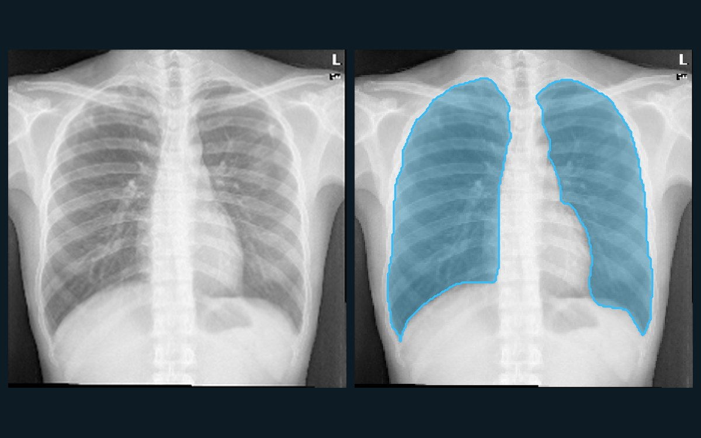

Multi-task chest X-ray analysis
Lung segmentation and thoracic-finding classification with shared encoders, boundary-aware loss weights and a TFRecord pipeline built for partially labelled data.
0.822 mean ROC-AUC
13 findings · CheXpert validation set (234 studies) · weighted ensemble of attention CNNs